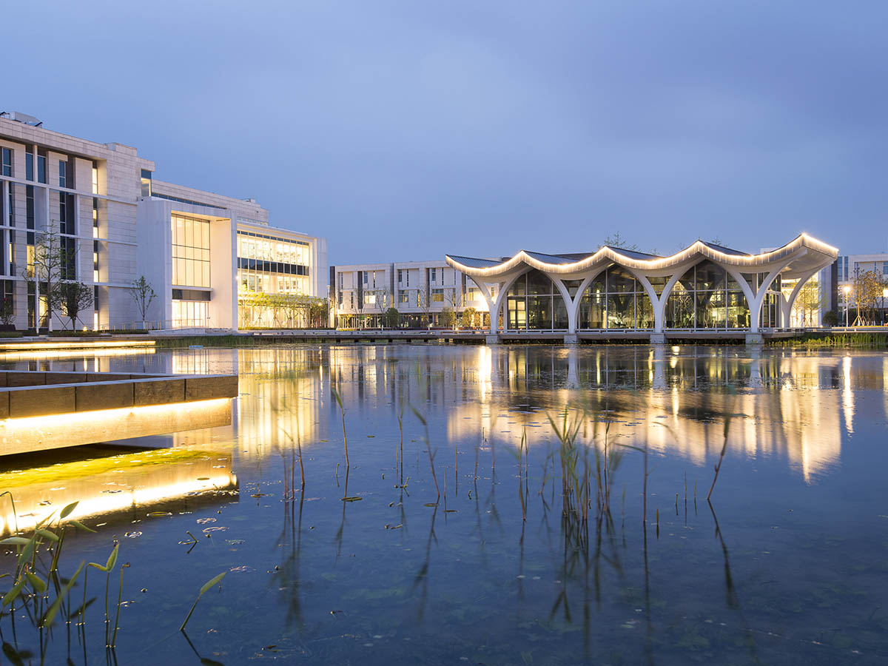

Academic
Semester starts, reading periods, add/drop checkpoints, and instructional milestones.
Duke Kunshan University
Track course milestones, reading periods, final exams, campus events, workshops, and university announcements in one clear dashboard built for the DKU community.

Dashboard
Review class milestones, deadline clusters, and exam periods in a full calendar view.
ExamsFilter by category, sort by date, and locate seminars, campus life events, and key academic items quickly.
DeadlinesKeep registration deadlines, reading days, residence hall notices, and closure periods visible.
Campus LifeFollow student club fairs, workshops, guest lectures, and campus-wide announcements.
Upcoming
Priority
Categories
Semester starts, reading periods, add/drop checkpoints, and instructional milestones.
Midterm windows, final examinations, and examination-period reminders.
Course registration deadlines, advising reminders, and schedule planning checkpoints.
Library sessions, career development workshops, and faculty or guest-led seminars.
Club fairs, residence hall updates, student activities, and community programming.